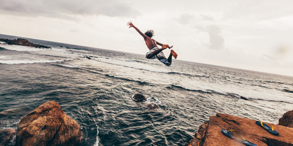

Exploring the Rich History and Captivating Culture of Galle: A Journey Through Time in Sri Lanka's Southern Jewel
Galle, a coastal gem nestled along the southern shores of Sri Lanka, embodies a captivating blend of history, culture, and natural beauty. At its heart lies the majestic Galle Fort, a UNESCO World Heritage Site boasting centuries-old Dutch colonial architecture and labyrinthine streets that whisper tales of bygone eras. Beyond the fort's sturdy ramparts, vibrant markets, and bustling streets offer a glimpse into the rich tapestry of local life, where the aroma of spices mingles with the melodies of traditional music. Galle's pristine beaches, fringed with swaying palms and azure waters, beckon travelers to unwind and indulge in the tranquil rhythms of coastal living. From its storied past to its vibrant present, Galle invites visitors to embark on a journey of discovery and enchantment.
Galle Fort also boasts scenic viewpoints overlooking the Indian Ocean, providing visitors with breathtaking panoramas of the coastline and the iconic Galle Lighthouse. Additionally, the fortification houses several notable landmarks, such asthe Dutch Reformed Church, the Old Dutch Hospital, and the Clock Tower.
Unawatuna Beach is not only a haven for beach lovers but also a hotspot for relaxation and rejuvenation. Visitors can lounge under the shade of coconut trees, indulge in beachside massages, or sip on refreshing coconut water while soaking up the warm tropical sun.In addition to its natural allure,

The Flag Rock Bastion in Galle is a historic landmark located in Galle Fort, Sri Lanka. It is a prominent stone structure situated at the southernmost tip of the fort, offering stunning panoramic views of the Indian Ocean. Originally built by the Portuguese in the 16th century and later fortified by the Dutch.
The Historical Mansion Museum in Galle is a notable attraction housed within a restored Dutch colonial mansion in Galle, Sri Lanka. The museum showcases the cultural heritage and history of the region, featuring artifacts, antiques, and exhibits that highlight the colonial era, maritime trade, and local traditions.
The Japanese Peace Pagoda in Galle is a serene Buddhist monument located atop Rumassala Hill, overlooking the picturesque coastline of southern Sri Lanka. Built by Japanese monks as a symbol of peace and harmony, the pagoda is one of several such structures around the world. Its pristine white exterior and elegant architectural design.
Jungle Beach in Galle, Sri Lanka, is a stunning hidden gem nestled along the southern coast of the island. Tucked away amidst lush greenery and rugged cliffs, this secluded beach offers a perfect blend of natural beauty and tranquility. Accessible via a short hikethrough the jungle, visitors are rewarded with soft golden sands,clear turquoise
Galle Lighthouse or Pointe de Galle Light is the oldest lighthouse in Galle. The lighthouse was established in 1848 and stands tall today at 26.5 meters at the shore of Galle.The bright white lighthouse with the background of the blue skies, turquoise blue and green ocean, the golden sand of the shore.
Sea Turtle Farm and Hatchery the Sea Turtle Farm and Hatchery is a conservation initiative dedicated to protecting and preserving endangered sea turtle species. Located in [Koggala], it serves as a sanctuary for sea turtles, providing a safe environment for their nesting, hatching, and rehabilitation.
Rumassala Sanctuary is one of Galle's most popular tourist destinations. The refuge is home to a diverse collection of wild exotic plants, medicinal herbs, and lovely shrubs. Many uncommon bird species can also be found here in the wild.The Rumassala Hills offer breathtaking vistas of the blue ocean.
Galle, located on Sri Lanka's southern coast, is a captivating blend of history, culture, and natural beauty.
At its heart lies the majestic Galle Fort, a UNESCO World Heritage Site boasting centuries-old Dutch colonial architecture.
Beyond the fort's ramparts, vibrant markets and bustling streets offer a glimpse into the rich tapestry of local life.
Galle's pristine beaches, fringed with swaying palms and azure waters, invite travelers to unwind and indulge in coastal living.
From its storied past to its vibrant present, Galle offers visitors a journey of discovery and enchantment.

.png)